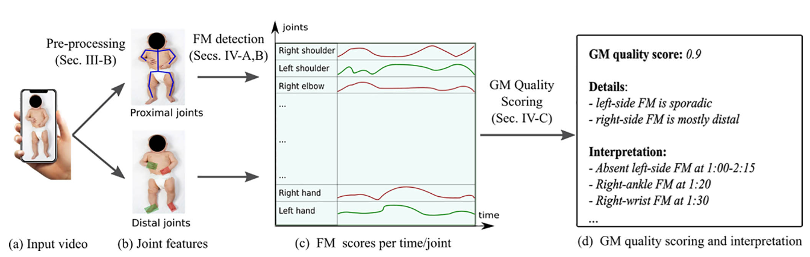
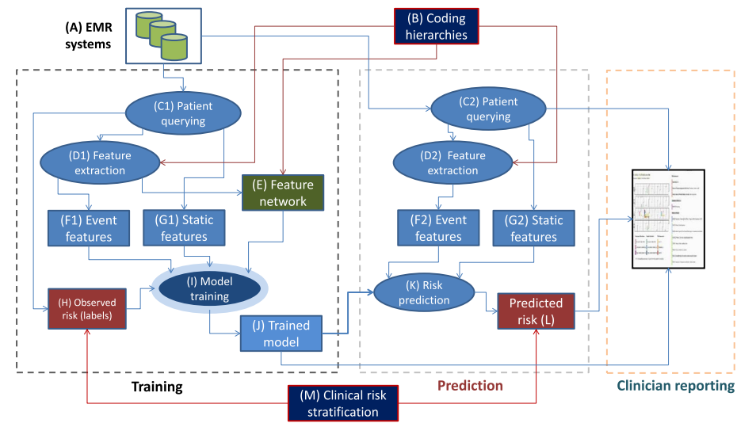
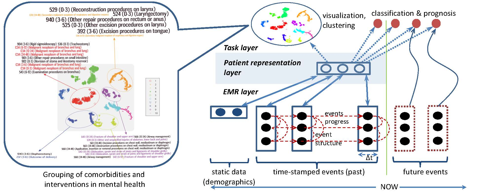
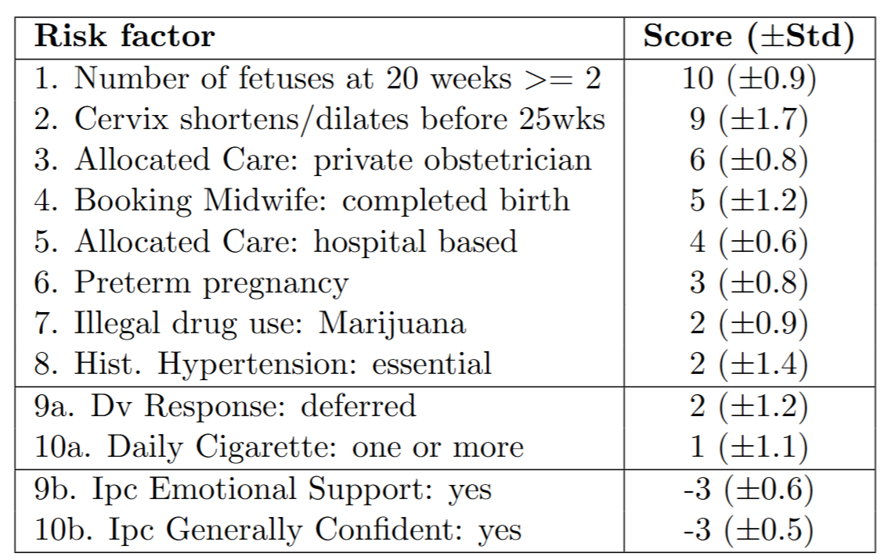
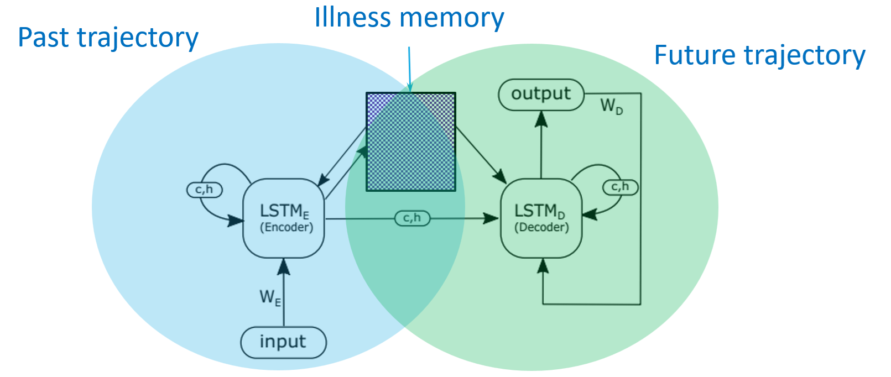

(Source: TEKsystems)
AI4Health Projects
Universal screening for GMA
This project aims at developing accessible computer vision techniques for universal screening for GMA (General Movements Assessment). Given video clips captured by mobile phones, algorithms will analyse the infant's movement patterns and detect possible risks of developmental disorders such as cerebral palsy. We also develop tools for detailed annotation, and methods to ensure privacy.
Partners: Cerebral Palsy Alliance (Australia), CP360 (International).

Interpretable movement analysis of joints
Interpretable movement analysis of joints
Modelling Electronic Medical Records (EMRs)
Modern hospitals and medical centres have collected huge amount of clinical data for hundreds of millions of patients over the past decades. However, how to make the best out of the data for improving clinincal services remains the major question. This research aims at characterising the data using statistical models and applying the state-of-the-art machine learning techniques for representation, clustering and prediction both at the patient and the cohort levels.
Partners: Barwon Health, Victoria Dept. of Health

Modelling EMR for the past and present, predicting the future.
Modelling EMR for the past and present, predicting the future.
Suicide risk prediction
Mental health is a major burden in modern life. Our research focuses on the most devastating consequence of all: suicide, which is a main cause of death accounting for nearly 2% of deaths worldwide. This poses grave challenges for mental health service providers, and the open question is how to improve early detection of suicide and prevention.
Mandatory practice in health services is to perform risk assessments, serving as one of the gate-keeper indicators in triage to determine nature of care. Such assessments have medico-legal consequences. However, the reliability and validation of suicide risk assessments is not well understood in terms of predictive power, and remains a controversial issue in risk management. Second, clinicians face a difficult task in retrieving relevant pieces of information from patient history to make informed decision.
This project aims at answering the following questions: Can we predict suicides automatically, given mental history, risk assessments and clinical intervention data? Can clinician’s decision be aided with relevant information in a sea of big, complex data? What are the risk factors? What differentiate righ risk outcomes from the rest? What are actionable insights for prevention?
Stable high-dimensional clinical prediction models
Clinical prediction models benefit greatly from sparse but high-dimensional data as they cover risk factors that can be overlooked by compact models. However, when the training data is limited, this results in instability in model estimation. This project aims to find ways to mitigate the effect and estimate the uncertainty of the risk factors discovered.

Modelling the past and present, predicting the future.
Modelling the past and present, predicting the future.
Pre-term birth prediction
| Every pregnancy is expected to reach full term. However, approximately 10-15% of all infants are born prematurely, before 37 weeks of gestation. Preterm birth is a major cause of infant mortality, developmental delays, and long-term disabilities. The earlier the delivery, the longer the infant requires intensive care, resulting in increased medical costs and emotional stress for the family. Predicting preterm births is crucial as it enables healthcare providers to implement preventive care and early interventions. This project aims to develop explainable machine learning models to predict preterm births using large observational databases. We extract hundreds of potential predictive signals and develop machine learning methods that quantify the uncertainty associated with these signals. |  Simple checklist for preterm risk assessment. |
Deep learning for healthcare
Deep learning presents a class of flexible models suitable for modelling the complexity of the health trajectories. This project aims at developing deep neural networks for healthcare.
Partners: Barwon Health, Victoria Dept. of Health

Memory-augmented neural networks for health trajectories
Memory-augmented neural networks for health trajectories
Physics-informed ML for pandemics
[TBA]
PIML for medical image analysis
[TBA]
Social media monitoring for mental health
[TBA]
Social media modelling for eating disorders
[TBA]
Explainable AI for better treatment of AAA
This project aims to develop new explainable AI to improve the personalised management and treatment of abdominal aortic aneurysms (AAAs), a severe condition that affects 20M people worldwide. This will be part of the AAA-MEDICAL Synergy program 2024-2029. The project focuses on integrating diverse data types from the program's biobanks, registries, and clinical trials, including genetic data, clinical information, imaging features, biomarkers, and biomechanical parameters. Using this rich dataset, we develop machine learning models to:
- Predict individual AAA growth rates and rupture risk, improving upon existing risk calculators.
- Identify patient subgroups most likely to benefit from specific drug therapies, supporting personalized treatment selection.
- Optimise drug delivery strategies for AAA treatment, particularly for novel targeted approaches like nanoparticle-conjugated drugs.
- Analyse and interpret data from preclinical studies, including the novel mouse model and human AAA explant experiments, to accelerate drug discovery and development.
Partners: James Cook University.
ML for management of chronic diseases
[TBA]
ML for digital enhanced living
[TBA]